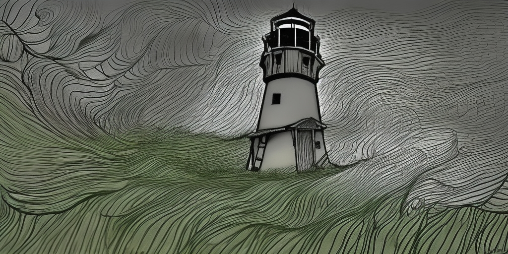

Chapter 2: El Oro de los Ratones
Before the Next Full Moon


Before the Next Full Moon
15051.05.07
觸岸時，已是深夜了。沙灘碼頭上一片漆黑，空無一人，讓瑪琳船長感到疑惑。她帶領著大家走入市中心。市中心有一處噴水池，左右兩側分別為商店街，轉角處則是瑪琳船長的家。一名穿著教會服裝的男子正在瑪琳船長家等她，表情看起來十分焦急。經過了解，島上失蹤的事件越發嚴重，甚至出現了原因不明的中毒事件。
冒險者們先到瑪琳船長家三樓的客房休息，準備隔日出發，協助解決島上的事件。
15051.05.08
一早，根據瑪琳船長的說明，島上有個「聖徒雕像」（勇者雕像），在燈塔附近，是當地的觀光勝地。冒險者們朝著這個景點的方向走去。途中他們也逛了逛紀念品店，波購買了完整一套的勇者公仔紀念品，包含聖拉雅米、轟雷牧師、守望者、焰狼、火龍捲，以及煉獄，大家也從店員口中打聽到了一名住在燈塔旁，脾氣古怪的獨居老人朗費羅，不過據說他喜歡喝海鮮湯，因此冒險者們決定先去附近的酒館「黃金之傲」買海鮮湯，再去拜訪他。
來到了朗費羅的小屋，幾番溝通加上海鮮湯，朗費羅才讓大家走進他的小屋。朗費羅表示自己是前陣子中毒的，中毒後臉色發黑，走路不穩，而且容易累。他也表示自己以前是礦工，但在島嶼西邊的金海岸礦坑坍塌後，他是唯一倖存的人。礦坑也在坍塌後封鎖起來了。
冒險者們決定往金海岸礦坑前進，卻在離開時遇見了匆匆跑來的莉蓮娜，他表示拉芙在礦坑附近的公園失蹤了。
朗費羅為冒險者們準備了幾個煤油燈和一個裝有金絲雀的鳥籠，讓冒險者可以放心踏入礦坑。
走到金海岸礦坑附近，周圍被木柵欄圍起來，附近地上則有些許鞋印和爪印，木樁上的布料甚至有被刮破的痕跡。
冒險者們隨著莉蓮娜一一翻過柵欄，只有YHWH留了下來，和附近的遊民約瑟夫談天。
走入礦坑，冒險者小心翼翼地往下探索，發現了一個意識不穩定，倒下的人。經過確認，這人便是狂暴戰士幫的「巫妖剋星」艾希斯。艾希斯表示拉索斯教把人抓來這裡。不過冒險者們還是沒有看見拉芙的蹤跡。向另一條走道走去，他們前方看見了其他人形生物的影子，仔細一看，是兩隻老鼠人朝著冒險者的方向跑來，從後方陰影中伸出巨大的黑色爪子抓住了跑在後面的老鼠人，將他拖入陰影之中。
『不……他們殺了臭皮！』
冒險者們試著和驚魂未定的老鼠人搭話，得知他的名字叫鼠田佩特拉，而他的夥伴臭皮被殺死了。地底下時常有一名人類拉索斯教徒和一隻怪物出現，後方伸出長長爪子的就是那隻怪物。那隻怪物有著黑毛、長手臂和尖爪，似乎非常怕火。冒險者們繞過轉角，看見在牆邊有個冒出紅光的標記，怪物和教徒正好在那。看見冒險者們，怪物便按向標記，傳送走了，留下教徒。不過米多莉定睛一看，那人竟然是他苦苦追尋的小雪。這讓米多莉陷入了極度複雜的情緒。
隨著小雪跑走，其他冒險者們趕緊去研究標記，發現它應該是個傳送陣。而為了增幅傳送的能量，通常會使用寶石進行增幅，但冒險者們並未看見附近藏有寶石。然而，與一般的傳送陣比較，這個傳送陣使用的似乎是巫妖的法術，在吸收寶石能量後，會讓周遭的人中毒，而這也很有可能是島上大量中毒事件發生的主因。
冒險者們繼續在地下探索，看見了鼠田的另一名夥伴，髒牙，也找到了拉芙。同時，他們聽見了怪物的低鳴聲。一場戰鬥一觸即發。
方努爾市，龍恩在一座津菈教堂醒來。他的巫妖手臂似乎被捆綁上了一條金屬鍊子。一名修女看見他醒來，趕緊喚來神父。根據神父的說明，這些鍊子只能暫時抵擋巫妖的力量，建議龍恩去找一名被稱為「巨鎚」的瑞斯。
在瑪麗修女的陪伴下，兩人漫步在方努爾市的街道。閒聊之中，龍恩得知瑪麗修女似乎和米多莉一起在名為尼姆的孤兒院長大，小時候的米多莉也是蠻調皮的。
見到了傳說中的巨鎚瑞斯，瑞斯帶著瑪麗修女和龍恩前往尼姆孤兒院附近的一座水井。他們在深處看見兩名拉索斯教徒，圍著一個魔法陣，正在吟唱。而魔法陣的中央，堆放著神秘的黑色石頭，隱隱散發著毒素。在龍恩和瑞斯的攻擊下，兩名教徒很快就被擊倒了。瑞斯也給了龍恩一張他的調查紀錄，最上方寫著瑞斯・提格’的書房（瑞斯提克的研究）。
YHWH在其他冒險者進入洞穴一陣子後，聽到了多姆尼爾的聲音，告訴他礦坑的底部有好東西。於是YHWH和約瑟夫便也翻過柵欄，走入礦坑內。YHWH在礦坑底部看見了大量的炸藥，便用他的百寶袋盡可能的把所有炸藥裝進去。他們倆也爬到了地底，與其他冒險者們交談後，便爬回地面，帶著炸藥走回礦坑入口待命。
冒險者們與怪物戰鬥的同時，發現它似乎和拉茲特獸有些相似，甚至可以說是變異的拉茲特獸，不僅外觀十分特化，活動的速度也明顯比過去看過的快上非常多。
激戰的過程中，冒險者對怪物的傷害似乎微不足道，直到在YHWH的協助下引爆了部分的炸藥，怪物才有較為明顯的損傷，但同時波也陷入了昏迷。
經過了隊友們的搶救與奮戰，冒險者們終於將怪物擊倒，除了約瑟夫和髒牙外並沒有人死亡。戰鬥結束後，艾希斯和喜利・噢喜力來到傳送陣調查。艾希斯將他的劍，異教徒剋星，插入傳送陣的圖型，並扭轉了一下，竟然掉出了一些寶石，以及一張紙條，然而紙條上寫的似乎是拉索斯語，兩人看不懂。喜利・噢喜力先將寶石收了起來，計畫帶去給懂礦石的山田看。
喜利・噢喜力也將紙條遞給了看得懂拉索斯語的波閱讀，波解讀出上面寫的內容，是小雪寫給川納唐普爵士的信，寫著關於一些實驗，以及預計進行的儀式。信的內容足以表明小雪和米多莉已站在不同的立場，因此為了保護米多莉，波請他先暫時離開洞穴後，才和其他人分享信件的內容。而內容中特別提到預計會在下次月圓之日進行儀式，下次的月圓是5/14，已經不到一星期了。
冒險者們趕緊離開礦坑，先回到瑪琳船長家去，預計接下來可先回狂暴戰士幫回報消息，或接受瑪琳船長的指令，去方努爾市的聖津菈大教堂找羅賓遜主教。瑪琳船長希望冒險者們可以將島上的調查報告轉交給主教，同時也遞給大家一個勳章，可以證明他們是津菈教的協助者，路程上會方便很多。同時，山田也表示自己有任務在身，會跟著大家一同前往方努爾市。
休息時，波和米多莉詢問了關於小雪的事，得知他們倆從小在名為尼姆，由軍營改建而成的孤兒院長大，有一年冬天，他們計劃從孤兒院逃走，卻被其中一名同伴，狐狸人瑪莉背叛，而失敗了，不久後，小雪便被帶走了。另波感到意外的是，小雪似乎從來沒有信奉過津菈教，米多莉也坦承自己其實並不是很虔誠的信徒。波也藉機詢問了「聖娜塔莎」這個他在小雪所寫的信中看見過的地名（小雪在信中表示這個地方是他們將舉行儀式的地方）。依照米多莉的了解，這個地方似乎就是個偏僻的小漁村罷了，沒什麼特別的。
晚餐時間，冒險者們和瑪琳船長等人共進晚餐。冒險者們向瑪琳船長詢問了不少問題，得知目前推斷島上的惡意事件應為住在金海岸礦坑的拉索斯教徒們幹的。他們也得知津菈教可分為本格派以及南方少數的因諾派。十多年前的津菈教內戰中，因諾派的領導者川納唐普爵士落敗，被剝奪他的爵位，流放至聖娜塔莎，而聖娜塔莎也被去除了聖字，改為單純的娜塔莎，也就是爵士妻子的名字。年輕時的他並不熱愛宗教，據傳是因為他的妻子，他才成為了宗教狂熱者。馬林船長也不排除川納唐普爵士與拉索斯教合作的可能性。
艾希斯將先前波交還給他的劍，異教徒剋星，再次交給波，預祝冒險者們接下來的路途順利，並表示他可以回到狂暴戰士幫回報消息。
喜利・噢喜力私下和山田詢問了他們在礦坑找到的寶石，在山田的鑑定下，他判斷這些黑色的寶石是「拉巴比石」，在特定的角度下可以看見折射出彩虹色的光線。而其中一顆，甚至是極為稀有的「大河之心」。這些石頭，依照山田的解釋，可以拿來增幅特定類型的法術，包含死靈學派的法術以及傳送術。山田表示他來這裡的目的之一便是確認大河之心的下落，但他並沒有要帶走的意思，讓喜利・噢喜力可以自行決定怎麼處理，不過他建議可以交給津菈教處理。喜利・噢喜力將其中一顆交給山田，其他則在和冒險者們討論後先交給瑪琳船長保管，只帶其中一顆去見羅賓遜主教。
準備好後，冒險者們和山田一同前往瑪琳船長私有的船隻，準備前往方努爾市。
夜深，大家入眠後，喜利・噢喜力彷彿聽見了水滲入船艙的聲音。不久後，他在一處沙灘上醒來，身邊卻不見其他夥伴的身影，只有一個藍髮的小女孩看著他。「你的符號是什麼？」小女孩問他。他說這個地方叫特勞姆。
小女孩領著搞不清楚狀況的喜利・噢喜力來到一座涼亭，有一名身穿白袍的削瘦男子，男子請喜利・噢喜力看向涼亭旁的一口井。喜利・噢喜力d看向井內，井內有八個符號不斷閃過，但喜利・噢喜力仍然不知道哪個是他的符號。喜利・噢喜力再次看向井中，這次井中的景象有了變化，他看見一名綠色頭髮的小女孩在一片廢墟中穿梭，焦急地尋找著什麼。
「我們暫時叫你A8990F吧。」男子如此說道，然後將喜利・噢喜力的頭壓入水中。
喜利・噢喜力驚醒，在船艙中的他手中緊握著一張紙，上面有個謎題。謎題似乎和喜利・噢喜力的過去有關。
龍恩、瑪莉和瑞斯在地底下和怪物戰鬥，怪物驚人的戰鬥力將看似身經百戰的瑞斯的頭咬斷了，瑪莉也陷入了昏迷，在經過了長時間的戰鬥後龍恩發現他被封印的巫妖手臂自行動了起來對準了怪物的方向，似乎吸收了什麼東西。怪物被擊倒後化身成了一名衣著破爛的小孩子的屍體。龍恩也發現自己在吸收了這隻怪獸的能量後，手上用來封印巫妖之手的鏈子似乎生鏽了。
龍恩背著昏迷的瑪莉，嘗試找到出口。他聽見上方似乎有人在說話，依稀聽見尼姆和津菈的字眼。推開木板，他看見一名神父、一名修女和四個小孩子。神父向他說明這裡是尼姆孤兒院，並讓修女帶他們去休息，他則聽了龍恩的說明後派人到地底下去將瑞斯的屍體處理。
然而，龍恩對於剛剛看見的景象感到不對勁。死去的怪物變成了疑似孤兒院的小孩，這當中似乎有些什麼問題。出於不放心，他在瑪莉清醒後，將瑪莉一起背到地底下，確認瑞斯的屍體是否還在原處，只見不包含愛茉倫神父的三名神父正將瑞斯和原為怪物的小孩屍體搬到一旁去。龍恩提議要將他們的屍體搬到聖津菈大教堂去，較為安全，經過了龍恩的解釋後，神父們最終接受了他的提議。
15051.05.07
It was already late at night when we hit the shore. The beach pier was dark and deserted, which made Captain Marin confused. She led everyone into the city center. There is a fountain in the city center, with shopping streets on the left and right sides, and Captain Marin's home at the corner. A man wearing church clothes was waiting for her at Captain Marin's house, looking very anxious. After understanding, the disappearances on the island became more and more serious, and there were even poisonings of unknown reasons.
The adventurers first went to the guest room on the third floor of Captain Marin's house to rest, preparing to set off the next day to help solve the incident on the island.
15051.05.08
Early in the morning, according to Captain Marin's explanation, there is a "Saint Statue" (brave statue) on the island, which is near the lighthouse and is a local tourist attraction. The adventurers headed in the direction of this attraction. On the way, they also visited the souvenir shop. Beau bought a complete set of souvenir warrior figures, including Saint Rayami, Priest of Thunder, The Watcher, Flame Wolf, Fire Tornado, and Inferno. From the clerk, they also learned about a eccentric old man named Ronfello who lived alone next to the lighthouse. However, it was said that he liked to drink seafood soup, so the adventurers decided to go to the nearby tavern "Golden Pride" to buy seafood soup before visiting him.
After arriving at Ronfello's hut, after several rounds of communication and seafood soup, Ronfello allowed everyone to enter his hut. Ronfello said that he was poisoned a while ago. After being poisoned, his face turned black, his walking was unsteady, and he got tired easily. He also said he was a former miner but was the only one to survive the collapse of the Gold Coast mine on the west side of the island. The mine was also sealed after the collapse.
The adventurers decided to head towards the Gold Coast Mine, but when they left, they met Liliana running in a hurry. He said that Ralf was missing in the park near the mine.
Ronfello has prepared several kerosene lamps and a birdcage with a canary for adventurers so that they can step into the mine with confidence.
When we walked near the Gold Coast Mine, we were surrounded by wooden fences. There were some shoe prints and paw prints on the ground nearby, and the fabric on the wooden piles even had scratches.
The adventurers followed Liliana over the fence one by one. Only YHWH stayed and chatted with the nearby homeless man Joseph.
Entering the mine, the adventurer carefully explored downwards and found a man whose consciousness was unstable and collapsed. After confirmation, this person is Essis, the "Lich Bane" of the Berserker Gang. Essis means that the Rathos Cult captured people here. However, the adventurers still saw no trace of Ralf. Walking towards another aisle, they saw the shadows of other humanoid creatures in front of them. Upon closer inspection, they saw two rat men running towards the direction of the adventurers. Huge black claws stretched out from the shadows behind and grabbed the rat man running behind, dragging him into the shadows.
"No...they killed Stinky!" 』
The adventurers tried to talk to the frightened rat man and learned that his name was Petra, and that his partner Stooges had been killed. There is often a human Lassos cultist and a monster appearing underground. The one with long claws behind is the monster. The monster had black fur, long arms and sharp claws, and seemed to be very afraid of fire. The adventurers rounded the corner and saw a red light glowing mark on the wall, where the monsters and cultists happened to be. Seeing the adventurers, the monster pressed towards the mark and teleported away, leaving the cultists behind. However, Midori took a closer look and found that the person turned out to be the Yuki he was looking for. This left Midori in a state of extremely mixed emotions.
As Yuki ran away, the other adventurers hurried to study the mark and found that it should be a teleportation array. In order to amplify the transmitted energy, gems are usually used to increase the energy, but the adventurers did not see any gems hidden nearby. However, compared with the ordinary teleportation array, this teleportation array seems to use the magic of the lich. After absorbing the energy of the gems, it will poison the people around it. This is also likely to be the main reason for the large number of poisoning incidents on the island.
The adventurers continued to explore underground and saw another friend of Shutian, Dirty Tooth, and also found Ralf. At the same time, they heard the monster's low cry. A battle is about to break out.
Fannur City, Ron woke up in a Zinla church. His lich arm seemed to be tied with a metal chain. A nun saw him waking up and called the priest. According to the priest's explanation, these chains can only temporarily resist the power of the lich, and it is recommended that Ron find a Reese known as "The Great Hammer".
Accompanied by Sister Mary, the two strolled through the streets of Fannur. During the chat, Ron learned that Sister Mary seemed to have grown up with Midori in an orphanage called Nimu. Midori was also quite naughty when she was a child.
Meeting the legendary giant hammer Reese, Reese takes Sister Mary and Ron to a well near the Nimu Orphanage. They saw two Rathos cultists in the depths, surrounding a magic circle and chanting. In the center of the magic circle, mysterious black stones are piled up, faintly exuding poison. Attacked by Ron and Reese, the two cultists were quickly knocked down. Reese also gave Ron a record of his investigation, with Reese Tig’s Study written at the top.
YHWH A while after the other adventurers entered the cave, Domneil's voice was heard, telling him that there was something good at the bottom of the mine. So YHWH and Joseph climbed over the fence and walked into the mine. YHWH saw a large amount of explosives at the bottom of the mine, so he used his treasure bag to put as much explosives as possible into it. The two of them also climbed underground. After talking to other adventurers, they climbed back to the surface and walked back to the entrance of the mine with explosives to wait.
While the adventurers were fighting the monster, they discovered that it seemed to be somewhat similar to the Razitemon. It could even be said to be a mutated Razitemon. Not only did it have a very specialized appearance, but it also moved much faster than those seen in the past.
During the fierce battle, the adventurers' damage to the monster seemed negligible. It was not until some explosives were detonated with the assistance of YHWH that the monster suffered more obvious damage, but at the same time Beau also fell into a coma.
After the rescue and fighting of their teammates, the adventurers finally knocked down the monster, and no one died except Joseph and Dirty Tooth. After the battle, Essis and Siri came to the teleportation array to investigate. Essis inserted his sword, Pagan Bane, into the teleportation array pattern, and twisted it. Some gems fell out, as well as a note. However, the note seemed to be written in Rathos language, which the two of them could not understand. Siri collected the gems first and planned to take them to Yamada, who knew about minerals.
Siri also handed the note to Beau, who could understand Rathos, to read it. Beau interpreted what was written on it, which was a letter written by Yuki to Sir Trumpet, about some experiments and the expected rituals. The content of the letter is enough to show that Yuki and Midori have taken different positions. Therefore, in order to protect Midori, Beau asked him to leave the cave temporarily before sharing the content of the letter with others. The content specifically mentioned that the ceremony is expected to be performed on the next full moon day, which is 5/14, which is less than a week away.
The adventurers quickly left the mine and returned to Captain Marin's home. They expected to return to the Berserker Gang to report the news, or accept Captain Marin's instructions and go to the Saint Jira Cathedral in Fannur City to find Bishop Robinson. Captain Marin hopes that the adventurers can forward the investigation report on the island to the bishop, and also hand everyone a medal to prove that they are the helpers of Jinla Cult, which will make the journey much more convenient. At the same time, Yamada also said that he has a mission and will follow everyone to Fannur City.
During the break, Beau and Midori asked about Yuki and learned that they had grown up in an orphanage converted from a military camp called Nimu. One winter, they planned to escape from the orphanage, but were betrayed by one of their companions, the fox-man Mary, and failed. Soon after, Yuki was taken away. Another thing that surprised Beau was that Yuki seemed to have never believed in Jinla religion. Midori also admitted that he was not a very devout believer. Beau also took the opportunity to ask about "St. Natasha", a place name that he had seen in the letter written by Yuki (Yuki stated in the letter that this place was the place where they would hold the ceremony). According to Midori's understanding, this place seems to be just a remote fishing village, nothing special.
At dinner time, the adventurers had dinner with Captain Marin and others. The adventurers asked Captain Marin a lot of questions and learned that it was currently inferred that the malicious incidents on the island were caused by the Lassos cultists living in the mines on the Gold Coast. They also learned that the Jinla sect can be divided into Benge sect and a small number of Inno sects in the south. In the Zinla civil war more than ten years ago, the leader of the Innocent sect, Sir Trump, was defeated, deprived of his title, and exiled to St. Natasha. St. Natasha also had the holy word removed and was changed to simply Natasha, which was the name of the knight's wife. As a young man he was not religious, and it is said that it was his wife who made him a religious fanatic. Captain Marin also did not rule out the possibility of Sir Trump's cooperation with the Rathos Cult.
Essis handed over the sword that Beau had previously returned to him, the Pagan Bane, to Beau again, wished the adventurers good luck in their next journey, and said that he could return to the Berserker Gang to report the news.
Siri privately asked Yamada about the gems they found in the mine. After Yamada's identification, he determined that these black gems were "Lababi stones", which can be seen refracting rainbow-colored light at specific angles. And one of them is even the extremely rare "Heart of the River". These stones, according to Yamada's explanation, can be used to amplify specific types of spells, including necromancy school spells and teleportation spells. Yamada said that one of the purposes of his coming here was to confirm the whereabouts of the Heart of the River, but he had no intention of taking it away, allowing Siri to decide how to deal with it, but he suggested that it be left to the Jinla Cult. Siri gave one of them to Yamada, and gave the others to Captain Marin for safekeeping after discussing with the adventurers. Only one of them was taken to see Bishop Robinson.
After getting ready, the adventurers and Yamada headed to Captain Marin's private ship to prepare for Fannur City.
Late at night, after everyone fell asleep, Siri seemed to hear the sound of water seeping into the cabin. Not long after, he woke up on a beach, but there were no other friends around him, only a little girl with blue hair looking at him. "What is your symbol?" the little girl asked him. He said the place was called Traum.
The little girl led Siri, who was confused about the situation, to a pavilion. There was a thin man in a white robe. The man asked Siri to look at a well next to the pavilion. Sirid looked into the well, where eight symbols were flashing, but Siri still didn't know which one was his. Siri looked into the well again, and this time the scene in the well changed. He saw a little girl with green hair walking through the ruins, looking for something anxiously.
"We'll call you A8990F for now," the man said, then pushed Siri's head into the water.
Siri woke up with a start. In the cabin, he clutched a piece of paper with a puzzle on it. The puzzle appears to be tied to Siri's past.
Ron, Mary and Reese fought the monster underground. The monster's amazing fighting power bit off the head of Reese, who seemed to have experienced many battles. Mary also fell into a coma. After a long battle, Ron found that his sealed lich arm moved on its own and pointed in the direction of the monster, seeming to have absorbed something. After being knocked down, the monster transformed into the body of a child in rags. Ron also found that after absorbing the energy of this monster, the chain used to seal the Lich's Hand seemed to be rusty.
Ron carries the unconscious Mary on his back and tries to find the exit. He heard someone talking above him, and vaguely heard the words Nimu and Jinla. Pushing aside the wooden board, he saw a priest, a nun and four children. The priest explained to him that this was the Nimu Orphanage and asked the nun to take them to rest. After listening to Ron's explanation, he sent someone underground to dispose of Reese's body.
However, Ron felt something was wrong about what he just saw. The dead monster turned into a child in a suspected orphanage. There seems to be something wrong with this. Out of worry, after Mary regained consciousness, he carried Mary underground together to confirm whether Reese's body was still where it was. He saw three priests, not including Father Amoren, moving the bodies of Reese and the child who turned out to be a monster to one side. Ron proposed that their bodies should be moved to the Cathedral of St. Zinla, where it would be safer. After Ron's explanation, the priests finally accepted his proposal.